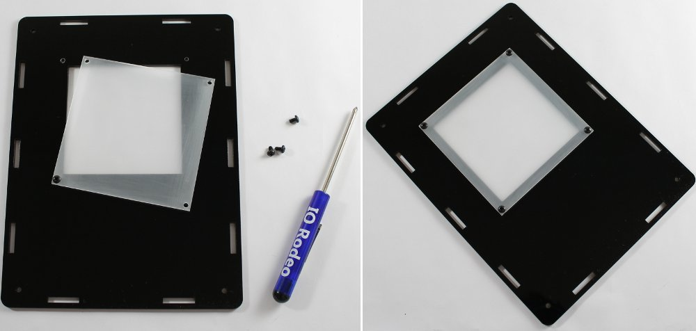
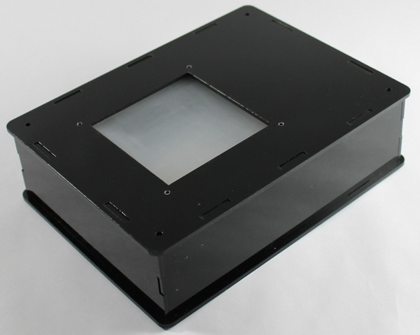
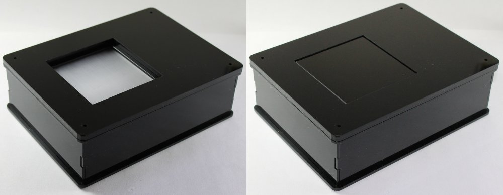
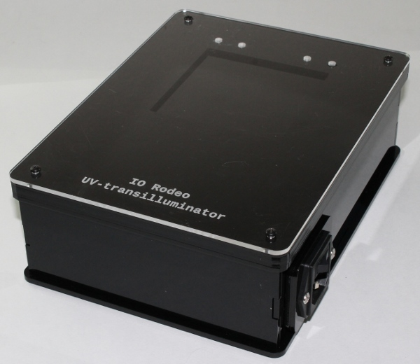

Assembly Step 3: Enclosure top assembly¶
The top part of the transilluminator has a total of 4 layers of acrylic which are used to mount the diffuser, the transilluminator glass and a UV transmissive protective cover. These top layers are secured in place with the four enclosure top screws and the standoffs.
Parts List¶
- Assembled part from Step 2
- Diffuser
- UV transilluminator glass
- Four remaining acrylic top plates (enclosure top, filter holders (2) and solacryl cover plate)
- Diffuser screws, enclosure top screws (hardware Bag B)
Instructions¶
- Attach the diffuser to the ⅛” enclosure top using the diffuser screws.

- Place the enclosure top onto the assembled enclosure from the previous step with the diffuser on the inside of the enclosure as shown in the image below.

- Place filter holder # 1 onto the enclosure top. Next, place the transilluminator glass into the filter holder slot.

- Next, place filter holder # 2 onto the enclosure followed by the UV-transmissive cover. In each corner place an O-ring and one of the enclosure top screws. Tighten down with the screwdriver.
